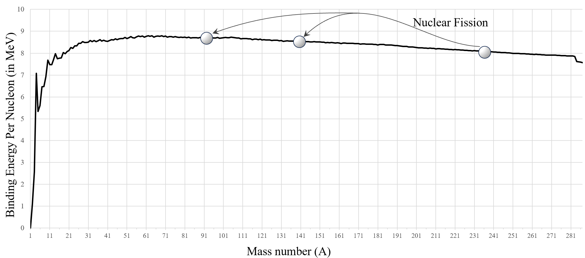
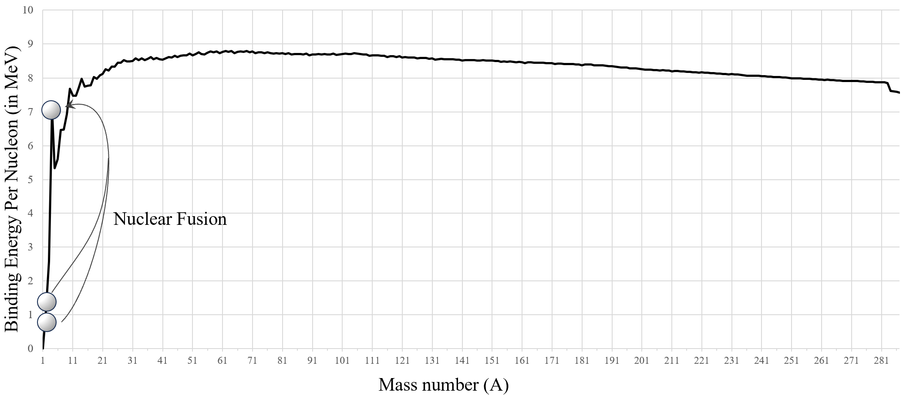

Nuclear reactions involve processes where a nucleus undergoes a transformation to
achieve a more stable state. Examples of such reactions include alpha decay, beta
decay, gamma decay, and fission. Unlike chemical reactions that involve electrons
and occur at lower energy levels, nuclear reactions require particles to come
extremely close—on the order of a femtometer (\(10^{-15}\) meters)—to overcome the
electrostatic repulsion between positively charged nuclei. This proximity allows the
strong nuclear force to facilitate the reaction.
The energy released in nuclear reactions is vastly greater than that in chemical
reactions. While chemical reactions involve energy changes of about a few electron
volts (eV) per atom, nuclear reactions release energies in the range of millions of
electron volts (MeV) per nucleus. This significant difference arises because nuclear
reactions involve changes in the nucleus's binding energy, which holds protons and
neutrons together.
External factors like temperature, pressure, and humidity have negligible effects on
nuclear reactions under normal conditions. The energies involved in nuclear
processes are so high that typical environmental conditions do not significantly
influence reaction rates. However, extreme conditions, such as those found in
stellar cores, can affect nuclear reaction rates due to the immense temperatures and
pressures present.
Applications of nuclear reactions are widespread. In energy production, nuclear
power plants utilize controlled nuclear fission reactions to generate electricity.
In medicine, nuclear reactions are employed in radiation therapy to treat cancer,
using radioactive isotopes that decay and emit radiation to destroy cancerous cells.
Industrial applications include material analysis through techniques like neutron
activation analysis, which determines the composition of materials by inducing
nuclear reactions.
The following sections describe nuclear reactions in a systematic way, exploring
their properties, types of decay, and the fundamental processes of fission and
fusion.
For a nucleus to undergo a nuclear reaction, it can either interact with another
particle or undergo a spontaneous transformation to achieve stability. The stability
of the nucleus is a key factor; nuclei with an imbalance in their neutron-to-proton
ratio are often unstable and more likely to participate in nuclear reactions to
achieve greater stability. Factors influencing reactivity include the energy of the
incoming particle and the specific nuclear properties of the target nucleus.
Nuclear reactions are inherently probabilistic events governed by quantum mechanics.
It is impossible to predict precisely when a particular nucleus will undergo a
reaction. Instead, calculations are based on probabilities and cross-sections that
describe the likelihood of a reaction occurring under specific conditions. Since
individual nuclear events cannot be predicted, statistical methods are used to
estimate reaction rates in large populations of nuclei.
Several fundamental conservation laws govern nuclear reactions:
Charge Conservation: The total electric charge remains constant
during a nuclear reaction. The sum of the charges of the reactants equals the sum of
the charges of the products, ensuring that charge is neither created nor destroyed.
Mass-Energy Conservation: Mass and energy are equivalent, as
expressed by Einstein's equation \( E = mc^2 \). In nuclear reactions, a small
amount of mass can be converted into a significant amount of energy (mass defect),
resulting in the large energy releases characteristic of these reactions. When mass
is also considered a form of energy, the total energy before and after the reaction
remains conserved.
Momentum Conservation: The total momentum of the system is
conserved. Since momentum is a vector quantity, both magnitude and direction are
considered. Recoil effects occur when particles adjust their motion to conserve
momentum during the reaction.
Angular Momentum Conservation: The total angular momentum,
including both orbital and intrinsic (spin) components, remains constant. Parity,
related to the symmetry of the system's wave function, is also conserved in most
nuclear reactions.
The Q value of a nuclear reaction represents the net energy change
during the reaction. It is calculated as the difference in total mass-energy of the
reactants and products:
\(\qquad Q = \left( \text{Total mass of reactants} - \text{Total mass of products}
\right)
c^2\)
A positive Q value indicates an exoergic reaction, where energy is released. A
negative Q value signifies an endoergic reaction, requiring an input of energy. The
Q value is essential for understanding whether a reaction is energetically feasible
and how much energy is involved.
Exoergic reactions release energy and are generally more likely to
occur spontaneously. An example is the emission of an alpha particle from certain
unstable nuclei. In contrast, endoergic reactions absorb energy and
require external energy input to proceed. An example is the production of certain
heavy elements in particle accelerators, where nuclei are forced to combine despite
natural repulsion.
For endoergic reactions, a certain threshold kinetic energy is required for the
reaction to occur. The incoming particles must possess enough energy to overcome the
energy absorption of the reaction. This threshold impacts the reaction rates and
feasibility, as only particles exceeding this energy can initiate the reaction under
given conditions.
Unstable nuclei seek stability through nuclear decay, transforming into more stable
configurations by emitting particles or radiation. [GPT Instructions: Mention that
following is a graph showing all the stable isotope of all elements. The
curve thus formed is called stability curve. If elements are formed not on this
curve, its unstable. Uses some reaction to achieve stability.]
The primary types of decay are
alpha decay, beta decay, and gamma decay. Each type involves different changes
within the nucleus and helps adjust the neutron-to-proton ratio or shed excess
energy, moving the nucleus toward greater stability.
Alpha Decay
Alpha decay occurs in large, unstable nuclei. In these large nuclei, the
strong nuclear force, which typically holds protons and neutrons
together, becomes less effective over larger distances. Consequently,
the electrostatic repulsion between protons dominates, destabilizing the
nucleus and promoting the emission of an alpha particle to regain
stability.
During alpha decay, an unstable nucleus emits an alpha particle,
comprising two protons and two neutrons (essentially a helium-4 nucleus,
\( ^4_2\text{He} \)). This emission reduces the atomic number by two and
the mass number by four, steering the nucleus toward a more stable
configuration. For example, in the decay of uranium-238:
The binding energy curve illustrates that such reactions increase the
binding energy per nucleon, moving the nucleus closer to the "valley of
stability," thereby enhancing its stability.
Q Value in Alpha Decay
The Q value represents the energy released during alpha decay,
calculated from the mass difference between the original nucleus (parent
nucleus) and the resulting products (daughter nucleus and alpha
particle). For a general alpha decay reaction, where a nucleus \( X \)
decays to a daughter nucleus \( Y \) by emitting an alpha particle:
\( m_X \) is the nuclear mass of the original nucleus \( X \),
\( m_Y \) is the nuclear mass of the daughter nucleus \( Y \),
\( m_{\alpha} \) is the nuclear mass of the alpha particle.
In most cases, atomic masses are given instead of nuclear masses. Since
atomic masses include the mass of electrons, adjustments for electron
masses must be made to apply the Q value formula accurately with atomic
masses. By incorporating these adjustments, we modify the formula as
follows:
The energy released in alpha decay is distributed as kinetic energy
between \(^{A-4}_{Z-2}Y\) and the \(\alpha\) particle. Using the
conservation of momentum, we can determine how this energy is shared.
Assuming the original nucleus \( X \) is initially at rest, momentum
conservation dictates that the daughter nucleus \( Y \) and the alpha
particle have equal and opposite momenta, denoted by \( p \). Their
kinetic energies, in terms of \( p \), are:
Alpha decay allows the nucleus to lose excess mass and energy, promoting
stability. Although an alpha particle does not classically possess
enough energy to escape, quantum tunneling enables it to overcome the
nuclear potential barrier, facilitating a finite decay rate.
Beta Decay
Beta decay helps an unstable nucleus adjust its neutron-to-proton ratio,
addressing imbalances that can make the nucleus less stable. There are
three main types of beta decay, each resulting from different conditions
within the nucleus and aimed at restoring a more balanced nuclear
configuration.
Beta-minus (\( \beta^- \)) decay: This type of
decay occurs in neutron-rich nuclei where there is an excess of
neutrons relative to protons. In this process, a neutron inside
the nucleus transforms into a proton, emitting an electron
(known as the beta particle) and an antineutrino (\( \bar{\nu}_e
\)). The basic reaction for this transformation is as follows:
\(\qquad n \rightarrow p + e^- + \bar{\nu}_e\)
This transformation takes place within the nucleus. Among the
resulting particles, the proton remains in the nucleus, which
increases the atomic number by one while keeping the mass number
unchanged. The emitted electron, or beta-minus particle, is
ejected from the nucleus along with the antineutrino (\(
\bar{\nu}_e \)). The complete beta-minus decay reaction for a
nucleus can be expressed as:
The Q value for beta-minus decay, representing the energy
released during the process, is calculated based on the mass
difference between the initial and final nuclei. It is given by:
\( m_X \) is the mass of the initial nucleus \( X \),
\( m_Y \) is the mass of the daughter nucleus \( Y \),
\( m_e \) is the mass of the electron.
To express the Q value formula in terms of atomic masses (as
atomic masses are often provided), we account for the masses of
electrons included in the atomic masses of the parent and
daughter atoms. Since atomic masses inherently include electron
mass, we modify the formula as follows:
This released energy is shared between the beta particle and the
antineutrino, resulting in a continuous energy spectrum. The
variable distribution of energy between the beta particle and
the antineutrino explains why the energy spectrum is not
discrete. Due to momentum conservation,
the heavier daughter nucleus \( Y \) receives only a minimal
fraction of the kinetic energy, which can be considered
negligible
Beta-plus (\( \beta^+ \)) decay: This type of
decay occurs in proton-rich nuclei where there is an excess of
protons relative to neutrons. In beta-plus decay, a proton
inside the nucleus is converted into a neutron, emitting a
positron (the beta-plus particle) and a neutrino (\( \nu_e \)).
The fundamental reaction for this transformation is as follows:
\(\qquad p \rightarrow n + e^+ + \nu_e\)
This reaction occurs within the nucleus. Out of the resulting
particles, the neutron remains in the nucleus, decreasing the
atomic number by one while keeping the mass number constant. The
emitted positron, also known as the beta-plus particle, is
ejected from the nucleus along with the neutrino (\( \nu_e \)).
The overall beta-plus decay reaction for a nucleus is
represented as:
The Q value for beta-plus decay represents the energy released
during the process and is determined by the mass difference
between the initial and final nuclei. For beta-plus decay, the Q
value is given by:
\( m_X \) is the mass of the initial nucleus \( X \),
\( m_Y \) is the mass of the daughter nucleus \( Y \),
\( m_{e^+} \) is the mass of the positron.
To express the Q value formula in terms of atomic masses (as
atomic masses are often provided), we adjust the formula to
account for the electrons in the atomic masses of the parent and
daughter atoms. Since atomic masses include electron mass, the
formula is modified as follows:
In beta-plus decay, the majority of the released energy is
carried by the positron and the neutrino. The specific amount of
energy each particle carries depends on the angles and
directions at which they are ejected. Due to momentum
conservation, the heavier daughter nucleus \( Y \) receives a
minimal fraction of the kinetic energy, which can be considered
negligible. As a result, the primary discussion of energy in
beta-plus decay focuses on the energy carried by the positron
and the neutrino.
Electron capture (K-capture): Electron capture
occurs in proton-rich nuclei as an alternative to beta-plus
decay when there is an excess of protons. In this process, the
nucleus captures one of its inner-shell electrons, usually from
the K-shell, which combines with a proton to form a neutron and
emits a neutrino (\( \nu_e \)). The basic reaction for this
transformation is as follows:
\(\qquad e^- + p \rightarrow n + \nu_e\)
This reaction takes place within the nucleus. Among the
resulting particles, the neutron remains in the nucleus, which
decreases the atomic number by one while keeping the mass number
unchanged. The emitted neutrino (\( \nu_e \)) is ejected from
the nucleus. The overall electron capture reaction for a nucleus
can be expressed as:
The Q value for electron capture, representing the energy change
during the process, is calculated based on the mass difference
between the initial and final nuclei. It is given by:
\( m_X \) is the mass of the initial nucleus \( X \),
\( m_Y \) is the mass of the daughter nucleus \( Y \).
\( m_e \) is the mass of the electron \( Y \).
To express the Q value formula in terms of atomic masses (as
atomic masses are often provided), we account for the electrons
included in the atomic masses of the parent and daughter atoms.
Since atomic masses include electron mass, we modify the formula
as follows:
In electron capture, most of the energy released is carried away
by the emitted neutrino, while the daughter nucleus receives a
negligible amount of kinetic energy. The specific amount of
energy each particle carries depends on the angles and
directions at which they are ejected. Due to momentum
conservation, the heavier daughter nucleus \( Y \) absorbs only
a minimal fraction of the kinetic energy, which can be
considered negligible. Therefore, the primary energy
distribution in electron capture is between the neutrino and the
residual nucleus.
In each type of beta decay, the presence of neutrinos (or antineutrinos)
is crucial for conservation of both energy and momentum. The continuous
energy spectrum observed in beta decay (for \( \beta^- \) and \( \beta^+
\)) results from the sharing of energy between the beta particle and the
neutrino, a concept central to understanding beta decay energetics.
Gamma Decay
Gamma decay involves an excited nucleus \(^{A}_{Z}X^*\) releasing excess
energy by
emitting a gamma photon without changing its number of protons or
neutrons:
This process allows the nucleus to transition from a higher energy state
to a lower one. Gamma rays are high-frequency electromagnetic radiation,
placing them at the extreme high-energy end of the electromagnetic
spectrum. Gamma decay often follows alpha or beta decay when the
daughter nucleus is left in an excited state.
Since gamma decay does not alter the composition of the nucleus, it
doesn't affect the neutron-to-proton ratio but helps the nucleus achieve
a lower energy, more stable state.
Nuclear fission and fusion are processes that release energy due to the binding
energy differences between nuclei. The binding energy per nucleon curve shows that
nuclei with intermediate mass numbers (around iron and nickel) have the highest
binding energy per nucleon, making them the most stable. Energy is released when
heavy nuclei split (fission) or light nuclei combine (fusion) to form nuclei closer
to this peak stability.
Nuclear Fission
Nuclear fission is the process in which a heavy atomic nucleus,
typically with a high atomic number, splits into two or more smaller
nuclei, releasing a significant amount of energy. This process generally
requires the nucleus to absorb a neutron, which destabilizes it, causing
it to split. The fission process releases not only energy but also
additional neutrons, which may initiate further fission reactions,
leading to a chain reaction.
In most fission reactions, particularly for isotopes like uranium-235
and plutonium-239, a slow-moving "thermal" neutron is necessary to
initiate the reaction. When absorbed, this neutron destabilizes the
nucleus, causing it to undergo fission. However, only specific isotopes,
such as uranium-235, uranium-233, and plutonium-239, are readily
fissionable by thermal neutrons.
Nuclear fission releases a substantial amount of energy due to the
difference in binding energy between the original heavy nucleus and the
resulting smaller nuclei. The binding energy of the resulting nuclei is
higher, meaning they are more stable. This difference in binding energy
is converted to energy, typically around 200 MeV per fission event,
which is carried by the kinetic energy of the fission fragments, emitted
neutrons, and gamma radiation.
A classic example of nuclear fission is the splitting of uranium-235
when it absorbs a neutron:
In this reaction, uranium-235 absorbs a neutron, forming an unstable
uranium-236 nucleus. It then splits into two smaller nuclei, barium-141
and krypton-92, releasing three additional neutrons and approximately
200 MeV of energy.
The general form of a fission reaction for a nucleus \( X \) absorbing a
neutron can be represented as:
\( \ce{^{A}_{Z}X} \): The heavy nucleus undergoing fission.
\( \ce{^{A_1}_{Z_1}Y} \) and \( \ce{^{A_2}_{Z_2}Z} \): The resulting
fission fragments, typically mid-weight nuclei.
\( n \): The number of neutrons released, often 2 or 3.
Approximately 200 MeV of energy is released, varying slightly based
on the specific reaction.
During nuclear fission, the binding energy per nucleon increases as the
original heavy nucleus splits into smaller nuclei. Heavy elements, like
uranium-235, have relatively lower binding energy per nucleon compared
to mid-weight nuclei. When fission occurs, the resulting nuclei have
higher binding energy per nucleon, making them more stable. This
increase in binding energy per nucleon is directly responsible for the
energy released in fission.

Figure: Change of Binding Energy
Per Nucleon in Nuclear Fission.
The change in binding energy per nucleon during fission can be
visualized in the diagram above, showing the binding energy per nucleon
curve as a function of mass number. Heavier nuclei, like uranium, are
less stable and lie further from the peak, while the fission fragments
move closer to the peak stability near iron and nickel.
The Q-value, representing the energy released, can be calculated as the
difference in mass between the reactants and products:
Here, the mass difference \( \Delta m \) between the total mass of the
reactants (original nucleus and neutron) and the total mass of the
products (fission fragments and emitted neutrons) is converted to energy
using \( E = \Delta mc^2 \), where \( c \) is the speed of light.
Nuclear Fusion
Nuclear fusion is the process where two or more light nuclei combine to
form a heavier nucleus, releasing a significant amount of energy.
Similar to fission, fusion releases energy due to an increase in binding
energy per nucleon. However, in fusion, light nuclei like hydrogen,
which have low binding energy per nucleon, combine to form a heavier
nucleus with higher binding energy per nucleon, making the new nucleus
more stable. This increase in binding energy per nucleon is the source
of the energy released in fusion reactions
The change in binding energy per nucleon for fusion reactions can also
be observed on the binding energy curve, where lighter elements like
hydrogen move closer to the peak stability as they form heavier nuclei
like helium as shown:

Figure: Change of Binding Energy
Per Nucleon in Nuclear Fusion.
This process powers stars, including our Sun, where hydrogen nuclei fuse
to form helium in a series of reactions known as the proton-proton
(H-He) cycle.
In the Sun, the fusion reaction occurs in several steps: